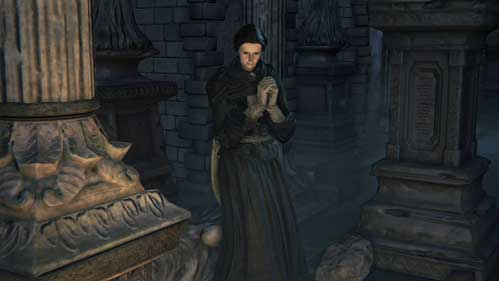

Adella the Nun |
|
|---|---|
|  | |
| General Info | |
| Location | Drops |
| Hypogean Gaol | Oedon Writhe |
Adella, Nun of the Healing Church is a non-player character in Bloodborne.
"Cleanse us of this horrible dream..."
Adella Information
A nun of the Healing Church, kidnapped from outside the Cathedral Ward and taken to Yahar-Gul by the sack-toting beasts known as Snatchers on the night of the Hunt.
Location
- Hypogean Gaol
- If the Hunter wishes to meet Adella, they must get themselves kidnapped and taken to Hypogean Gaol themselves. Snatchers will spawn after killing the Blood-starved Beast.
- Just outside the cell where the Hunter wakes up, to the right, there is a small nook where Adella is crying and begging not to be taken. The beasts captured many girls along with her, but none of them remain: only their distant, unending moans.
- Adella is inconsolable unless the Hunter speaks to her while wearing a chestpiece representing the Healing Church, such as the White or Black Church Set, Gascoigne's Set, Choir Set, Tomb Prospector Set or the Executioner Garb. If this is done, she will calm down, offer some lore, and ask if there is any place safe where she can go. The hunter can then choose to send her to the Cathedral Ward or Iosefka's Clinic (after speaking to the resident NPCs of those two areas).
Destination
- If sent to the Oedon Chapel:
- She teaches the Church Bow (Female) gesture, and offers vials of Adella's Blood, which heal more than normal blood vials and have an additional replenishment property, continuing to heal over time. You cannot accept Adella's blood if you already have Arianna's or Saint Adeline's blood, simply use or discard your current blood if you wish to receive Adella's.
- Adella will kill Arianna if you choose the Arianna's tainted blood over her own, possibly out of jealousy. (The trigger for this event is not the fight with Rom, the Vacuous Spider, Confirmed that she killed Arianna with last boss being Blood-starved beast, once you accept Arianna's blood more than 3 times, she will kill her on next load in.)
- Eventually, after the moon turns red and if she killed Arianna because you accepted Arianna's Blood, she'll be found outside the church and turns against the hunter out of her insanity.
- You can't obtain her gesture or her blood if you haven't talked to her in Oedon Chapel until the Blood Moon.
- Like other NPCs, Adella may be killed by the Suspicious Beggar, so it is not advised to send him to the Chapel if any NPC is present.
- If sent to Iosefka's Clinic:
- She will be turned into a Celestial Mob, and Iosefka will reward you with 1 insight and 2 Numbing Mist.
- If you enter the clinic and kill the blue creature standing in the main hallway with folded hands, it will drop the Oedon Writhe rune. It isn't hostile to Hunter; Hunter will have to attack it.
- If you choose to withhold information:
- After you warp away from the area she will leave the prison. She can later be found dead, on a staircase up the street of Yahar'Gul, near a pack of dogs. The Oedon Writhe rune can be found on her corpse.
Drops:
- "Oedon Writhe" Caryll Rune (Weak)
- Will drop when she is killed at Hypogean Gaol or after sending her to the Oedon Chapel.
Dialogue
Upon entering the room and standing on the stair case, the young woman can be heard saying:
Please, Leave me be... Don't Take me... Please... Oh, please, dear gods."
"Oh, merciful gods, help me..."/ "In the name of the Healing Church, cleanse us of this horrible dream..."
While telling her about a safe place:
Ahh, by your garb... the Healing Church...
You've come to save me...Ahh!
Thank you, dear saint!
I have no words to express my relief...
You could take this, at least.
It's sure to please an upstanding member of the church like you.
Ahh, thank you so much. Dear gods...
Thank you so much.
I was seized on the street by a hulking brute in the Cathedral Ward and locked up here.
There were many others, but they've been taken away...
And I've heard moans, echoes in the distance, ever since...
So, the hunt is on tonight?
Then the streets are perilous... And every door will be shut tight...
Perhaps it isn't my place to ask, but...
Do you know somehwhere that might take me in?
Oh, thank you so much.
I'll set out as soon as I can.
I pray for success on your hunt.
Kind hunter.
Talk in the Cathedral Ward:
Oh, brave hunter, you are alive.
Thank you very much.
The town is in disarray, but there are still people here.
Together, we await the help of the Healing Church.
I cannot begin to express my gratitude to you.
The only thing I can offer... Is my own lowly blood.
If it would suffice...
(Refuse) Forgive me, I... I should have known better. What would a brave hunter do with lowly blood like mine? Please, forget I even asked.
(Receive) Yes, of course. Come in close... Now, take my blood...
After the moon turns red (and if you consumed Blood of Arianna 4 or more times):
"Tee hee... My sweet hunter..."
"Your blood is tainted..."
"I can't ha... I can't help myself... hahaha haha..."
After Killing the Player：
I'll never leave your side..."
Upon death:
What have I done..." (does not speak if the moon turned red)
Lore
- "The healing church nuns are chosen for their merit as vessels for blood, and groomed as Blood Saints. The mere chance of being treated with their blood lends legitimacy to the Healing Church and communion." -Blood of Adella
Other Notes:
- Is unavailable anytime after the paleblood moon occurs. ( Before the one reborn boss fight )
- If you accept Arianna's blood more than 3 times while Adella is in the church, just kill the nun after she gives you the gesture to be safe because glitches have been reported with this NPC, she no longer contributes and eventually goes mad and attacks the hunter for being "impure" anyways.
- When ever you talk to Arianna while Adella is also in the Chapel Adella will look over to the two of you talking.
- Adella may suddenly disappear from Oedon Chapel after sending her there. It is currently unknown why this can happen.
- Requires a Healing Church chest armor to send to either safe place. Gascoigne's set works, so don't worry if you've sold the Black church set.
- Adella will disappear from the game entirely if she is not spoken to before the player kills Rom, causing the player to miss out on a potential caryll rune and gesture. Make sure to talk to her/kill her BEFORE killing Rom.
- If you do not consume 3 vials of Arianna's Blood and talk to her after the Moon is red, she will just giggle manically. (tested on 2 playthroughs)
Trivia
- When she attacks the player, she wields a unique dagger. The closest equivalent is the Chime Maiden dagger, but the hilt is different. Also, Adella does completely negligible damage and is a nonthreat to the player, similar to Rhea of Thorolund in Dark Souls.
- In her aggressive state, she can be lured to and picked up by the Amygdala nearby. If the player has the Eye of a Blood-Drunk Hunter in their inventory, this will trigger the DLC cutscene and the player will be transported to the Hunter's Nightmare.
Gallery
 Anonymous
AnonymousI love the detail of how she starts looking over when you start talking to Arianna
- Anonymous
- Anonymous
Just in case you didn't line up your ducks before talking to her, she does not, in fact, disappear as soon as you warp away from the area. I wanted to send her to the clinic and like an idiot had never gone back to get that option enabled. Wormholed my way back to the clinic and then back to the Gaol, she was still there cowering in fear. She'll get the help she needs.
So, add "Yandere nuns" to the list of reasons I love this game.
- Anonymous
- Anonymous
So i wasn't able to send her to clinic or chapel cause i haven't any healing church chestpiece. I found black church set and kill vicar Amelia and go again to speak with her but instead of here i have a message and cannot be find anymore (at that place i didn't go around yet). Can i find her again or it's dead ?
- Anonymous
Getting her grabbed by the Amygdala after she becomes hostile is hilarious!!! Also she survives after, so you don’t miss out on the rune
- Anonymous
- Anonymous
So, what im gathering from this, as cold as it may sound, the best course of action is to send her to the chapel, get her emote and a blood vial, and if you dont plan on using her vial regularly for the next hour or so before you kill rom and she just loses her sanity and becomes useless, just kill her immediately so she doesnt kill another npc and get rewarded with a very good rune for bloodtinge builds?
Is there any way to get her to speak after the blood moon? I only got a vial of her blood once and she just giggles.
- Anonymous
It feels kind of messed up to kill Adella for a rune. It sort of shows how morally ambiguous you are as a player. Then again she is descending into madness (after killing Rom), and she also potentially commits murder depending on the player's actions.
- Anonymous
I think Adella knew about Arianna's blood, given that she's a member of the Healing Church, and Arianna's blood vial description, she most likely kills her because she thinks her blood is tainted and doesn't want the Hunter to keep using it
- Anonymous
É a Freita que mata a velha depois que eu matei a Ama de Leite? Pois só tinha elas duas na catedral
- Anonymous
Can anyone tell me why I can't find her in the location in which she is suppose to appear? Snatchers also don't appear therefor I can't get killed and so on...
- Anonymous
So I have to get myself knocked out and kidnapped in order to recruit a psychopath for my save haven because video game
- Anonymous
- Anonymous
In my game she has killed Arianna (this is before killing Rom) and after you talk to her and leave she says "Oh, brave hunter. I pray for your safety. Come back soon... Tee hee." She says it in a menacing manner. Also, if you ask for blood after just getting some she says, "Oh, forgive me. I need more time," rather dismissively. Didn't see this above sorry if I missed it.
- Anonymous
I never took any blood from Arianna but Adella only laughs manically after the bloodmoon on my playthrough
- Anonymous
- Anonymous
Why is she such a damsel if she is a black church hunter...
- Anonymous
- Anonymous
"The beasts captured many girls along with her, but none of them remain: only their distant, unending moans." Kinky.
- Anonymous
Hey im playing ng+ I already gained access to yahar’gul unseen village, (as I wanted to befriend Djura) and then i killed the blood starved beast to find Adella. Snatchers did not appear and as a result i can not acces hypogean gaol. I visited the location of adella from unseen village but she wouldn’t appear! I then went to oedon chappel dweller which is still asking for survivors, keep in mind that the others are already there so the only survivor missing is her! If she would be dead then dweller would have told me that there are no more survivors so she is alive but somehow lost! Any ideas?
- Anonymous
I only got the game recently but I am most of the way through a no-death, ~100% completion run. Adella's mini-quest is the one thing you can't do in the game without dying as being picked up by the Amygdalas for the DLC and for the Nightmare Frontier don't kill you but being killed by a Snatcher and taken to Hyper Jail does result in a death. Just wanted to put that out there for anyone interested. So you either never die and never see her or you intentionally die once so you can get her rune.
- Anonymous
- Anonymous
If i have Adella's blood, will Arianna give me her blood?
Can i keep taking Adella's blood as many times i want and nothing will happen?
She didn't disappear for me when I chose "Withhold Information"
1) I went to Hypogeon Gaol and talked to here, eventually choosing "Withhold Information"
2) Teleported to 1st Floor Sickroom and talked to Iosefka, who then told me to send people over
3) Went back to Hypogeon Gaol and Adella was still there, chose "Tell about Iosefka's Clinic"
- Anonymous
I have to kill her to get the rune? I HAVE to? I HATE killing npcs and usually go out of my way to keep them alive, plus, i like the idea of having a steady supply of hp regen blood. WTH is this? I considered sending her to the clinic so i could pretend i was just killing a monster, i figured that there is no way my character could know Imposter Iosefka's intentions... I sent her to Oedon because a comment said you could actually just pick up the rune from where she was sitting in Hypogean Gaol after you sent her... Now i have to consciously make the choice to hack away at a human till she dies if i want her rune... I know she can go crazy, but i don't plan to let her.
- Anonymous
I killed Rom and she's still there, but she only laughs quietly when I try to interact with her.
- Anonymous
it is simple, kill the blood starved beast as soon as possible, get kidnapped and meet her with church gear, meet her at the ward then go back and pick up the rune from the floor where she was before going to the ward, get the arianna's blood vial, use when you please then get one more and never get more than those two, if you use it you can instead get adellas's blood vial from then on, no one dies, she doesn't go crazy after rom/paleblood moon, and you get the rune/gestures, case closed.
- Anonymous
Just a funny note: if Adella attacks you outside the chapel after she kills Arianna, you can get her grabbed by the Amygdala, which will transport you to the DLC. Wish i knew what happened to her if you don't have the eye of a blood drunk hunter.
- Anonymous
There's 0 evidence she kills Arianna out of jealousy. Much more likely she thinks Arianna is a Vileblood because she's wearing a Vileblood dress. Necessary edit made.
- Anonymous
It should be added, that her first encounter dialogue changes, depending on the kind of church garb you are wearing. For example she calls you a high ranking member of the church if you are wearing the choir garb.
- Anonymous
what happens when you dont get kidnapped until the blood moon, and then go the the cell where she usually is?
- Anonymous
So when I first found Adella the Nun I hit her but I didn't kill her then I left her there after I open up the nightmare world I when down to see her and she was gone but a sack monster had been killed as if she got away am I going to see her again ?
In my playthrough I got her to stay even after the Wetnurse fight by not talking to Arianna when Adella is present. After the Rom boss she does not disappear as the notes states and after the Micolash fight she will stay in her chair and just laughs maniacally when talked to. Adrianna was also not killed so I was able to get an Umbilical Cord.
We need an in-game image of the first location we find her at to add to the NPCs page: https://bloodborne.wiki.fextralife.com/NPCs
- Anonymous
Early on, I know I goofed, I sent old lady to church, and Adella. While I sent arianna amd beggar to clinic. I have gone to clinic and killed iosefka. She was in the passive state. Currently at the church, Adella just laughs and the old lady has left, leaving her note, and since returned. She is the same as before she left. Adella continues unchanged. I haven't yet, but am close, to killing the one reborn. Should I off adella for the rune at this point?
- Anonymous
Oedon Writhe the one that causes visceral attacks to grant bullets +1 per Vattack i suggest killling her as soon as she is in the ward building so she doesn't start killing ppl for w.e reason plus i find her vial to be less usefull than *****s blood and Arianna has story significance while the nun doesn't to keep from spoilers i won't say why
- Anonymous
once you get Arianna's blood for over three times, Adella will kill Arianna.
- Anonymous
what happens if you take arianna blood before you meet adella what happens?
- Anonymous
- Anonymous
I got the note from the old lady, but she came back and didn't die. I have the nun and arianna at the chapel, with the old lady and everyone's alive, though the nun seems a bit... disturbed... I have taken arianna's blood, but not the nuns, and just defeated Rom.
- Anonymous
- Anonymous
How many vials can you have? Is it like Iosefka's thing where it's just one at a time or could you get a stack of them that replaces your regulars?
- Anonymous
So, does she kill Arianna in the chapel or not? Some people state they have finished the game with both in the chapel and noone died. Can anyone confirm anything regarding her?
- Anonymous
I sent the nun to the clinic,as only the second npc I rescued, before I realized that there were specific places to send npcs. Is this a big mistake that can ruin my first play through or am I still ok?
- Anonymous
Just kill her, you gives you nothing good if you keep her alive. In fact she might kill your chance of getting the true ending! SO....JUST....F***ING....KILL...HER!
- Anonymous
She will not talk to me, i rescued her to the chapel already. The moon is orange.
Ok so I have Adella in my game currently in my game doing something not seen on the wiki, I have saved a video if anyone needs it. Basically I took Adella in, used loads of her blood vials (not sure if this is relevant but I did this testing for something else), I took 3 of Arianna's vials until she ended up killing her. Since beating The One Reborn I returned to Cathedral Ward only to find her missing. I exited through the left door and she has become hostile to me stating my "blood is impure". She wields a dagger and does very minimal damage. I let her kill me and after she says "I will never leave your side". Let her kill me again and nothing different happens, and she remains hostile towards me no matter what.
- Anonymous
i want to know if anyone has acquired the betrothed ring and made Adella jealous? Curious if maybe something could happen since she does have a creepy thing for you.
- Anonymous
Upon meeting her in NG+ playthrough I told the nun to go to the Cathedral. She never showed up between then and meeting the One Reborn.
- Anonymous
Wow, I didn't get any of this cool story stuff. The Adella in my playthrough did nothing after I sent her to the church. She didn't offer me blood, teach me a gesture, or attack any other npcs... she just sat in a corner either moaning or giggling madly, every time I visited :\ this was before the blood moon, too. Glitch?
- Anonymous
Adella killed arianna in my game, but then her body disappeared and she ended up at the tomb alive with her nightmare child.
- Anonymous
Anyone know how to get to her without killing the blood-starved beast i dont want to make djura hostile nor leave her behind
- Anonymous
i got adella's blood and now i can't take ariannas blood anymore ? what can i do to change that? can i still progress with arianna even tough i don't have her blood ?
- Anonymous
This set also works in convincing her you are of the healing church.
- Anonymous
After sending Adella to the Cathedral, and accepted several Sedatives from the old woman, I foud her dead outside the Cathedral. On the old woman chair a note was left saying "wait just a little longer, my angel". Can I assuma Adella killed her. I foud her dead after the reborn boss.
- Anonymous
"Hunter senpai loves my blood the best! Anyone that tries to take Hunter senpai away from me will die!"
- Anonymous
***** Im in Ng+ i made sure I sent her to the ward but apparently she's been sent to Iosefka now and again I missed out on the gesture! >.<
- Anonymous
So I assumed every one would respawm so I killed everyone I'm the room and now their just corpse...how *****ed am i?
- Anonymous
When you speak to Arianna she will lean behind the colomn and stare at you.... listening.
- Anonymous
Well she asked me if there was a safe place, I sent her to the church, but she never appeared! I already killed Amelia and it's night time. Can someone help me out?
- Anonymous
- Anonymous
- Anonymous
For the first time ever, in my dozens of playthrus, she vanished. I did nothing different the entire time. I sent her to cathedral, talked to her, took her blood, sent beggar to clinic, everything and she's gone she was not even where the grandma's corpse is if she goes insane So.. i think it's just RNG?


{kind=link}
{kind=link}
{kind=link}
I chose to withhold information first then sent her to Oedon Chapel, but later found her dead at Yahar'Gul anyway. Was that a bug or something?
1
+10
-1